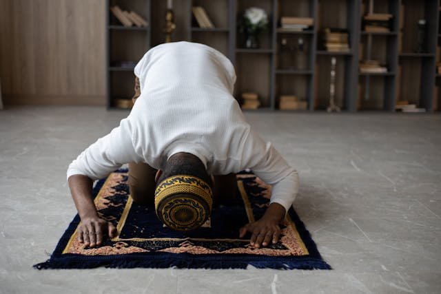

This is for padding
Pray Salat Always
Salat, or prayer, holds immense importance in Islam, serving as a direct connection between a believer and Allah. It is one of the Five Pillars of Islam and is obligatory for every Muslim. Salat is not merely a ritual but a spiritual practice that instills discipline, humility, and gratitude. Through the five daily prayers, Muslims maintain a constant awareness of Allah, aligning their lives with His guidance. It fosters inner peace, purifies the soul, and strengthens faith. Salat also promotes unity, as Muslims around the world face the same Qibla (direction) and recite similar supplications. Beyond spiritual benefits, Salat encourages a structured routine and reminds believers of their higher purpose in life. It serves as a moment of reflection, seeking forgiveness, and renewing one's commitment to righteousness. By observing Salat, Muslims express their obedience, devotion, and submission to the Creator. 